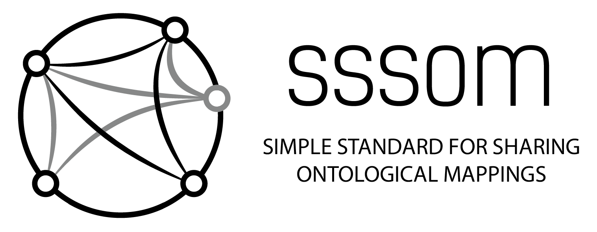

Simple Standard for Sharing Ontological Mappings (SSSOM)

The Simple Standard for Sharing Ontological Mappings (SSSOM) is a community-driven standard designed to facilitate the exchange and integration of semantic entity mappings. As data interoperability becomes increasingly crucial across various domains, SSSOM provides a standardized format to share mappings, enabling researchers and developers to more easily connect and utilize diverse datasets. By establishing a common framework, SSSOM enhances the consistency, quality, and discoverability of mappings, thereby supporting more effective data integration and analysis.
- Standardization: SSSOM provides a unified format for representing semantic, or ontological, mappings, making it easier for different systems and organizations to exchange mapping data consistently.
- Interoperability: By using SSSOM, data from diverse sources can be integrated more seamlessly, allowing for improved data analysis and research across various fields, including biology, healthcare, and information technology.
Beyond defining the standard itself, the SSSOM Core Team and the SSSOM community also develop reference tools and software libraries for working with the standard.
SSSOM at a glance: Model and Exchange Format
Basic model
The data model of SSSOM is centered around two fundamental concepts: mappings and mapping sets.
A SSSOM mapping is a statement that there is a correspondence between two semantic entities. It comprises two components:
- The core mapping (or raw mapping), which is a triple
<subject, predicate, object>that represents the correspondence itself between a subject entity, for example a class in an ontology, and an object entity, for example an identifier in some database, via a semantic mapping predicate, for exampleskos:exactMatch. - Metadata that provide supplementary pieces of information about the core mapping. This notably includes information about the provenance of the statement (for example, who authored the statement), the confidence with which the mappings holds, and its justification (a reason that supports the fidelity of the mapping between the subject and the object, such as expert review, or exact lexical matching on the entities' primary names).
A SSSOM mapping set is a collection of SSSOM mappings. Mapping sets can also be associated with metadata, such as license statements, or a description.
Example
While the SSSOM model is quite general and mappings can be shared in different formats, the most common format is the SSSOM/TSV format. Here is a tabular representation of some example mappings for illustration purposes:
| subject_id | subject_label | predicate_id | object_id | object_label | mapping_justification | author_id | confidence | comment |
|---|---|---|---|---|---|---|---|---|
| KF_FOOD:F001 | apple | skos:exactMatch | FOODON:00002473 | apple (whole) | semapv:ManualMappingCuration | orcid:0000-0002-7356-1779 | 0.95 | "We could map to FOODON:03310788 instead to cover sliced apples, but only 'whole' apple types exist." |
| KF_FOOD:F002 | gala | skos:exactMatch | FOODON:00003348 | Gala apple (whole) | semapv:ManualMappingCuration | orcid:0000-0002-7356-1779 | 1.0 | |
| KF_FOOD:F003 | pink | skos:exactMatch | FOODON:00004186 | Pink apple (whole) | semapv:ManualMappingCuration | orcid:0000-0002-7356-1779 | 0.9 | "We could map to FOODON:00004187 instead which more specifically refers to 'raw' Pink apples. Decided against to be consistent with other mapping choices." |
| KF_FOOD:F004 | braeburn | skos:broadMatch | FOODON:00002473 | apple (whole) | semapv:ManualMappingCuration | orcid:0000-0002-7356-1779 | 1.0 |
In the TSV format, mapping set metadata is included at the top of the file, before the mappings themselves, in yaml-like key-value pairs:
curie_map:
FOODON: http://purl.obolibrary.org/obo/FOODON_
KF_FOOD: https://kewl-foodie.inc/food/
orcid: https://orcid.org/
mapping_set_id: https://w3id.org/sssom/tutorial/example1.sssom.tsv
mapping_set_description: Manually curated alignment of KEWL FOODIE INC internal food and nutrition database with Food Ontology (FOODON). Intended to be used for ontological analysis and grouping of KEWL FOODIE INC related data.
license: https://creativecommons.org/licenses/by/4.0/
mapping_date: 2022-05-02
See here for concrete examples.
Quick reference for mapping metadata
For mapping set metadata please see here.
| Column/Field | Description | Value | Examples | Required |
|---|---|---|---|---|
| record_id | A unique identifier for a mapping record, that is for an instance of the Mapping class (in the SSSOM/TSV serialisation, this corresponds to an individual row after propagation is applied). This slot is intended to uniquely identify one such record within a mapping set and may for example act as the resource identifier for the record when it is serialised into RDF. This slot MUST NOT be used to “group” several records together to indicate that they pertain to a single mapping (for example, that they represent different versions of the same mapping), by assigning the same ID to several records. When it is used, every record within a set MUST have a unique, non-empty value. The identifier MUST be a URI; beyond that, its format is unconstrained and the identifier MUST be treated as an opaque string. | entity reference (e.g. CURIE in TSV) | N/A | Optional |
| subject_id | The ID of the subject of the mapping. | entity reference (e.g. CURIE in TSV) | HP:0009894 | Optional |
| subject_label | The label of subject of the mapping. | string | Thickened ears | Recommended |
| subject_category | The conceptual category to which the subject belongs to. This can be a string denoting the category or a term from a controlled vocabulary. This slot is deliberately underspecified. Conceptual categories can range from those that are found in general upper ontologies such as BFO (e.g. process, temporal region, etc) to those that serve as upper ontologies in specific domains, such as COB or BioLink (e.g. gene, disease, chemical entity). The purpose of this optional field is documentation for human reviewers - when a category is known and documented clearly, the cost of interpreting and evaluating the mapping decreases. | string | UBERON:0001062 | Optional |
| predicate_id | The ID of the predicate or relation that relates the subject and object of this match. | entity reference (e.g. CURIE in TSV) | owl:sameAs | Required |
| predicate_label | The label of the predicate/relation of the mapping. | string | has cross-reference | Optional |
| predicate_modifier | A modifier for negating the predicate. See https://github.com/mapping-commons/sssom/issues/40 for discussion | Not | Not | Optional |
| object_id | The ID of the object of the mapping. | entity reference (e.g. CURIE in TSV) | HP:0009894 | Optional |
| object_label | The label of object of the mapping. | string | Thickened ears | Recommended |
| object_category | The conceptual category to which the subject belongs to. This can be a string denoting the category or a term from a controlled vocabulary. This slot is deliberately underspecified. Conceptual categories can range from those that are found in general upper ontologies such as BFO (e.g. process, temporal region, etc) to those that serve as upper ontologies in specific domains, such as COB or BioLink (e.g. gene, disease, chemical entity). The purpose of this optional field is documentation for human reviewers - when a category is known and documented clearly, the cost of interpreting and evaluating the mapping decreases. | string | UBERON:0001062 | Optional |
| mapping_justification | A mapping justification is an action (or the written representation of that action) of showing a mapping to be right or reasonable. | entity reference (e.g. CURIE in TSV) | semapv:LexicalMatching | Required |
| author_id | Identifies the persons or groups responsible for asserting the mappings. Recommended to be a list of ORCIDs or otherwise identifying URIs. | entity reference (e.g. CURIE in TSV) | orcid:0000-0002-7356-1779|orcid:0000-0002-6601-2165 | Optional |
| author_label | A string representing the author of this mapping. This should only be used in the absence of a proper semantic identifier (which would be stored in author_id) for that author. It is not expected that there should be any link between author_id and author_label; in particular, author_label is not intended to provide a human-friendly version of an identifier in author_id. | string | Nicolas Matentzoglu|Chris Mungall | Optional |
| reviewer_id | Identifies the persons or groups that reviewed and confirmed the mapping. Recommended to be a list of ORCIDs or otherwise identifying URIs. | entity reference (e.g. CURIE in TSV) | orcid:0000-0002-7356-1779|orcid:0000-0002-6601-2165 | Optional |
| reviewer_label | A string representing the reviewer of this mapping. This should only be used in the absence of a proper semantic identifier (which would be stored in reviewer_id) for that reviewer. It is not expected that there should be any link between reviewer_id and reviewer_label; in particular, reviewer_label is not intended to provide a human-friendly version of an identifier in reviewer_id. | string | Nicolas Matentzoglu|Chris Mungall | Optional |
| creator_id | Identifies the persons or groups responsible for the creation of the mapping. The creator is the agent that put the mapping in its published form, which may be different from the author, which is a person that was actively involved in the assertion of the mapping. Recommended to be a list of ORCIDs or otherwise identifying URIs. | entity reference (e.g. CURIE in TSV) | orcid:0000-0002-7356-1779|orcid:0000-0002-6601-2165 | Optional |
| creator_label | A string representing the creator of this mapping. This should only be used in the absence of a proper semantic identifier (which would be stored in creator_id) for that creator. It is not expected that there should be any link between creator_id and creator_label; in particular, creator_label is not intended to provide a human-friendly version of an identifier in creator_id. | string | Nicolas Matentzoglu|Chris Mungall | Optional |
| license | A url to the license of the mapping. In absence of a license we assume no license. | NonRelativeURI | https://creativecommons.org/licenses/by/4.0/ | Optional |
| subject_type | The type of entity that is being mapped. | owl class, owl object property, owl data property, owl annotation property, owl named individual, skos concept, rdfs resource, rdfs class, rdfs literal, rdfs datatype, rdf property, composed entity expression | owl:Class | Optional |
| subject_source | URI of vocabulary or identifier source for the subject. | entity reference (e.g. CURIE in TSV) | obo:mondo.owl | Optional |
| subject_source_version | Version IRI or version string of the source of the subject term. | string | http://purl.obolibrary.org/obo/mondo/releases/2021-01-30/mondo.owl | Optional |
| object_type | The type of entity that is being mapped. | owl class, owl object property, owl data property, owl annotation property, owl named individual, skos concept, rdfs resource, rdfs class, rdfs literal, rdfs datatype, rdf property, composed entity expression | owl:Class | Optional |
| object_source | URI of vocabulary or identifier source for the object. | entity reference (e.g. CURIE in TSV) | obo:mondo.owl | Optional |
| object_source_version | Version IRI or version string of the source of the object term. | string | http://purl.obolibrary.org/obo/mondo/releases/2021-01-30/mondo.owl | Optional |
| predicate_type | The type of the predicate used to map the subject and object entities. | owl class, owl object property, owl data property, owl annotation property, owl named individual, skos concept, rdfs resource, rdfs class, rdfs literal, rdfs datatype, rdf property, composed entity expression | owl:AnnotationProperty | Optional |
| mapping_provider | URL pointing to the source that provided the mapping, for example an ontology that already contains the mappings, or a database from which it was derived. | NonRelativeURI | https://www.ohdsi.org/ | Optional |
| mapping_source | The mapping set this mapping was originally defined in. mapping_source is used for example when merging multiple mapping sets or deriving one mapping set from another. | entity reference (e.g. CURIE in TSV) | MONDO_MAPPINGS:mondo_exactmatch_ncit.sssom.tsv | Optional |
| mapping_cardinality | A string indicating whether this mapping is from a 1:1 (the subject_id maps to a single object_id), 1:n (the subject maps to more than one object_id), n:1, 1:0, 0:1 or n:n group. Note that this is a convenience field that should be derivable from the mapping set. | 1:1, 1:n, n:1, 1:0, 0:1, n:n | 1:1 | Optional |
| mapping_tool | A reference to the tool or algorithm that was used to generate the mapping. Should be a URL pointing to more info about it, but can be free text. Consider using the mapping_tool_id slot for a more standardised reference. | string | https://github.com/AgreementMakerLight/AML-Project | Optional |
| mapping_tool_id | The ID (entity reference) of the tool or algorithm that was used to generate the mapping. | entity reference (e.g. CURIE in TSV) | wikidata:Q58057366 | Optional |
| mapping_tool_version | Version string that denotes the version of the mapping tool used. | string | v3.2 | Optional |
| mapping_date | The date the mapping was asserted. This is different from the date the mapping was published or compiled in a SSSOM file. | date | 2021-01-01 | Optional |
| publication_date | The date the mapping was published. This is different from the date the mapping was asserted. | date | 2021-01-01 | Optional |
| confidence | A score between 0 and 1 to denote the confidence or probability that the match is correct, where 1 denotes total confidence. | double | 0.95 | Optional |
| curation_rule | A curation rule is a (potentially) complex condition executed by an agent that led to the establishment of a mapping. Curation rules often involve complex domain-specific considerations, which are hard to capture in an automated fashion. The curation rule is captured as a resource rather than a string, which enables higher levels of transparency and sharing across mapping sets. The URI representation of the curation rule is expected to be a resolvable identifier which provides details about the nature of the curation rule. | entity reference (e.g. CURIE in TSV) | DISEASE_MAPPING_COMMONS_RULES:MPR2 | Optional |
| curation_rule_text | A curation rule is a (potentially) complex condition executed by an agent that led to the establishment of a mapping. Curation rules often involve complex domain-specific considerations, which are hard to capture in an automated fashion. The curation rule should be captured as a resource (entity reference) rather than a string (see curation_rule element), which enables higher levels of transparency and sharing across mapping sets. The textual representation of curation rule is intended to be used in cases where (1) the creation of a resource is not practical from the perspective of the mapping_provider and (2) as an additional piece of metadata to augment the curation_rule element with a human readable text. | string | The two phenotypes inhere in homologous structures and exhibit the same phenotypic quality. | Optional |
| subject_match_field | A list of properties, annotations or attributes related to the subject that was used to establish the match. This property is recommended for use in conjunction with mapping justifications related to lexical matching, such as semapv:LexicalMatching. For additional information see the 'See Also' section. |
|||
| entity reference (e.g. CURIE in TSV) | rdfs:label | Optional | ||
| object_match_field | A list of properties, annotations or attributes related to the object that was used to establish the match. This property is recommended for use in conjunction with mapping justifications related to lexical matching, such as semapv:LexicalMatching. For additional information see the 'See Also' section. |
|||
| entity reference (e.g. CURIE in TSV) | rdfs:label | Optional | ||
| match_string | String that is shared by subj/obj. It is recommended to indicate the fields for the match using the object and subject_match_field slots. | string | gala | Optional |
| subject_preprocessing | Method of preprocessing applied to the fields of the subject. If different preprocessing steps were performed on different fields, it is recommended to store the match in separate rows. | entity reference (e.g. CURIE in TSV) | semapv:Stemming | Optional |
| object_preprocessing | Method of preprocessing applied to the fields of the object. If different preprocessing steps were performed on different fields, it is recommended to store the match in separate rows. | entity reference (e.g. CURIE in TSV) | semapv:Stemming | Optional |
| similarity_score | A score between 0 and 1 to denote the similarity between two entities, where 1 denotes equivalence, and 0 denotes disjointness. The score is meant to be used in conjunction with the similarity_measure field, to document, for example, the lexical or semantic match of a matching algorithm. | double | 0.95 | Optional |
| similarity_measure | The measure used for computing a similarity score. This field is meant to be used in conjunction with the similarity_score field, to document, for example, the lexical or semantic match of a matching algorithm. To make processing this field as unambiguous as possible, we recommend using wikidata CURIEs, but the type of this field is deliberately unspecified. | string | https://www.wikidata.org/entity/Q865360 | Optional |
| see_also | A URL specific for the mapping instance. E.g. for kboom we have a per-mapping image that shows surrounding axioms that drive probability. Could also be a github issue URL that discussed a complicated alignment | NonRelativeURI | https://github.com/mapping-commons/mh_mapping_initiative/pull/41 | Optional |
| issue_tracker_item | The issue tracker item discussing this mapping. | entity reference (e.g. CURIE in TSV) | SSSOM_GITHUB_ISSUE:166 | Optional |
| other | Pipe separated list of key value pairs for properties not part of the SSSOM spec. Can be used to encode additional provenance data. NOTE. This field is not recommended for general use, and should be used sparingly. See https://github.com/mapping-commons/sssom/blob/master/examples/schema/extension-slots.sssom.tsv for an alternative approach based on extension slots. | string | N/A | Optional |
| comment | Free text field containing either curator notes or text generated by tool providing additional informative information. | string | This mapping is weird in that the hierarchical position of the two terms is very different. | Optional |
Quick links
General
Publications
- A Simple Standard for Sharing Ontological Mappings (SSSOM) (initial publication in Database)
- A Simple Standard for Ontological Mappings 2022: Updates of data model and outlook (paper and presentation at the Ontology Matching Workshop 2022)
- A Simple Standard for Ontological Mappings 2023: Updates on data model, collaborations and tooling (paper and presentation at the Ontology Matching Workshop 2023)
- Other presentations
Related software
- sssom-py (reference implementation of the standard, a toolkit and API for processing mappings, written in Python)
- SSSOM-Java (an implementation of the SSSOM standard in Java)
- sssom-js (an implementation of the SSSOM standard in JavaScript)
The SSSOM Core Team
Contact
The preferred way to contact the SSSOM team is through the issue tracker (for problems with SSSOM) or the GitHub discussion forums (for general questions).
You can find any of the members of the SSSOM core team on GitHub. Their GitHub profiles usually also provide email addresses.
You can also reach us in the OBO Foundry Slack, in the #sssom channel.
Steering committee
The Steering committee is a self-appointed group of SSSOM contributors, whose aim is to drive the evolution of the standard and coordinate community contributions.
- Nicolas Matentzoglu (Semanticly, Independent Consultant; @matentzn)
- Damien Goutte-Gattat (Flybase)
- Harshad Hegde (LBNL)
- Chris Mungall (LBNL)
- Melissa Haendel (UNC)
Documentation/specification editors
- Anita Caron (EMBL-EBI)
- Charlie Hoyt (Harvard Medical School; @cthoyt)
- David Osumi-Sutherland (EMBL-EBI)
- Emily Hartley (Critical Path Institute)
- Ernesto Jimenez-Ruiz (City, University of London)
- Harry Caufield (LBNL)
- Henriette Harmse (EMBL-EBI)
- James McLaughlin (EMBL-EBI)
- John Graybeal (Independent Consultant)
- Sierra Moxon (LBNL)
- Simon Jupp (SciBite)
- Thomas Liener (Independent Consultant)
- Tiffany Callahan (@callahantiff)
- William Duncan (University of Florida)
Contributors
- Alasdair Gray
- Alex Wagner
- Amelia L. Hoyt
- Andrew Williams
- Anne Thessen
- Benjamin M. Gyori
- Bill Baumgartner
- Cassia Trojahn
- Clement Jonquet
- Christopher Chute
- Chris T. Evelo
- Damion Dooley
- Davera Gabriel
- Harold Solbrig
- HyeongSik Kim
- Ian Harrow
- Ian Braun
- James Malone
- James Overton
- James P. Balhoff
- James Stevenson
- Javier Millán Acosta
- Jiao Dahzi
- Joe Flack
- Jooho Lee
- Julie McMurry
- Kori Kuzma
- Kristin Kostka
- Lauren Chan
- Melissa Haendel
- Monica Munoz-Torres
- Nicole Vasilevsky
- Nomi Harris
- Núria Queralt-Rosinach
- Sabrina Toro
- Sebastian Koehler
- Shahim Essaid
- Sophie Aubin
- Sue Bello
- Sujay Patil
- Sven Hertling
- Tim Putman
- Vinicius de Souza
Acknowledgements
- See Funding for details on direct contributions.
- We thank the Link Model Language (LinkML) project and team for their great framework and the LinkML team for their support developing the schema.